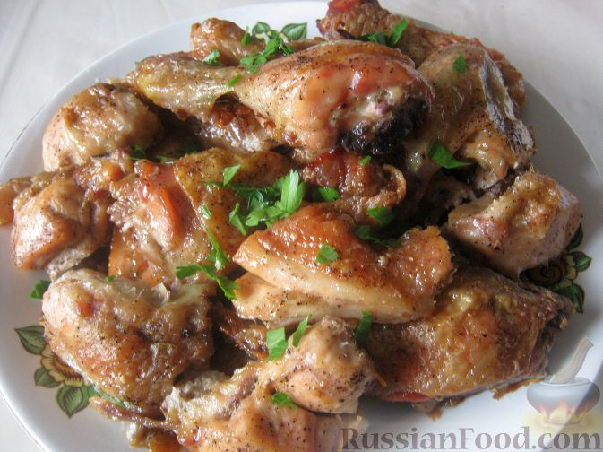

Курица под майонезом в духовке

Продукты:
- Курица бройлерная - 1 шт.
- Майонез - 3 ст. ложки
- Соль - 1 ст. ложка
- Перец - 1-2 щепотки
- Приправа для курицы - 0,5 ч. ложки
- Масло растительное - 1 ст. ложка
- Фото приготовления рецепта: Курица под майонезом в духовке
- шаг №1 Продукты для приготовления курицы под майонезом в духовке перед вами.
- Фото приготовления рецепта: Курица под майонезом в духовке
- шаг №2Как приготовить курицу под майонезом в духовке:
Включить духовку. Курицу вымыть и обсушить.
- Разрезать на небольшие кусочки.
- Посолить и поперчить. Можно добавить любимые специи.
- Фото приготовления рецепта: Курица под майонезом в духовке - шаг №5
Добавить 2-3 ст. ложки майонеза. Хорошо все перемешать и тщательно смазать каждый кусочек получившимся соусом.
- Фото приготовления рецепта: Курица под майонезом в духовке - шаг №6
Противень смазать растительным маслом. Выложить куриные кусочки.